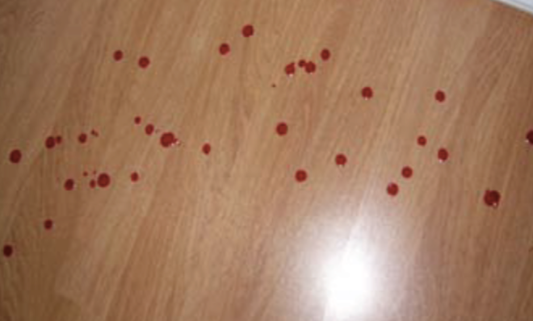
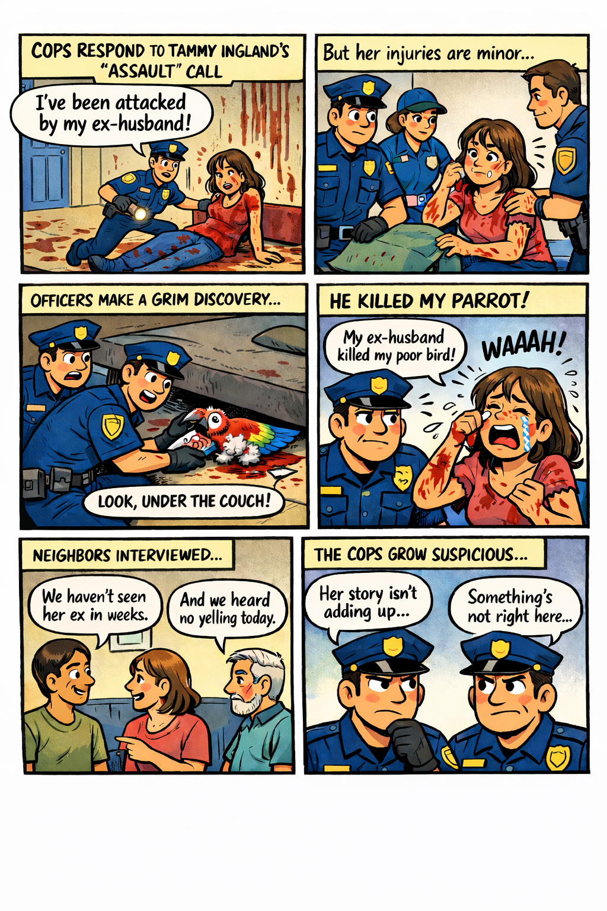
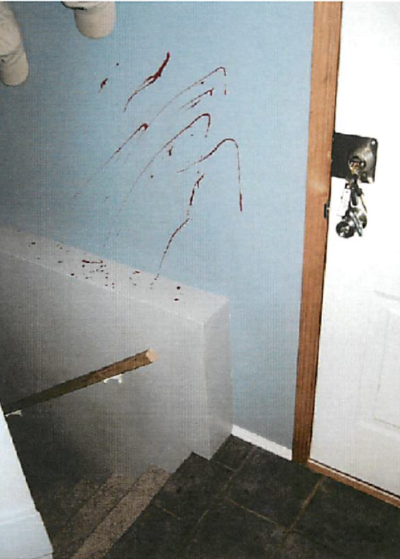

Core identification and analytical methodology (21 Marks Total).
1. Biological Evidence Utility (8 Marks)
Type of Evidence
Why it is useful
Type of crime scene
Blood
Saliva
Semen
Skin
2. Analytical Forensic Tools (8 Marks)
Tool
How it is used
Why it is used
Advantages
Disadvantages
Phenolphthalein
Luminol
Suggest possible areas within the house that investigators could check for small traces of blood that the culprit may have missed while cleaning up.
Explain how being able to prove that a suspect is a ‘secretor’ be helpful to investigators?
Crime Case Study #1
Unconvincing Circumstantial Evidence
COMPLETE CASE NARRATIVE
On the evening of May 21, 1939 the dead body of a widowed 64-year-old man named Walter Dinivan was found in his living room. The murderer had attempted to strangle Walter, but when this failed they killed him by crushing his skull with a hammer.
Investigation of the crime scene revealed that a large sum of money had been stolen from a small safe owned by the victim. In the victim’s kitchen, an unknown fingerprint was found on a drinking glass. In the victim’s living room, a brown paper bag was found on the floor crumpled up and soaked with the victim’s blood. As well, numerous cigarette butts found in the living room were collected and analyzed as Walter Dinivan did not smoke. Tests upon the cigarette butts revealed that the smoker was type AB+.
When family and acquaintances of Walter Dinivan’s were interviewed an individual of interest to investigators was Joseph Williams. Williams had told police that he was angry with Dinivan as he had refused to give him a small loan of money. Interestingly, a background check of Williams revealed that days after Walter Dinivan was murdered he paid off part of a debt he owed the bank. When Williams was asked by police for his fingerprints he refused and since there was no solid evidence against Joseph Williams he could not be forced to cooperate.
Having no other strong suspect, police decided to keep Joseph Williams under surveillance. One night when Williams went into a pub the police investigator who had asked him for his fingerprints went into the pub to speak to him. The police officer gave Williams the impression that he was there for a social call as he bought him a drink and some cigarettes. At the end of the evening, the investigating officer gathered the ashtray containing all of Williams’s cigarette butts. Analysis of these butts indicated that Williams was type AB+.
John Williams was brought in for questioning in the hopes that the evidence that they had collected thus far would lead Williams to confess. Williams did not confess, however he did allow police to search his home. The only thing that investigators found of significance was a large stash of brown paper bags that were identical to the bag found in the victim’s home. When Williams was confronted with this he angrily denied the allegation that he murdered Walter Dinivan again and he offered to give police his fingerprints. Williams right thumbprint matched the unknown print found in Dinivan’s home.
John Williams was finally arrested and put on trial for the murder of Walter Dinivan. Williams pleaded not guilty and he had a strong defense lawyer who argued and convinced the jury all the evidence found was purely circumstantial. The jury found John Williams not guilty of the murder charge.
Sadly, shortly after the not guilty verdict was announced a drunken John Williams confessed to a local reporter he had been celebrating with that he had murdered Walter Dinivan. The reporter did not reveal this confession until after John Williams had died in 1951.
Evidence Classification (4 Marks)
Paid off bank loan
Brown paper bag
Cigarette butts
Fingerprint on glass
Crime Case Study #2
Which Neighbour is a Killer?
OFFICIAL CASE RECORD
On April 30th, 1984, police rushed to a local farm after getting a frenzied 911 call from Graham Backhouse. When they arrived he could barely stand, as he had several deep cuts on his face and left shoulder. Lying dead on the ground in front of Backhouse’s back door was his neighbor, Colyn Bedale-Taylor. Colyn had died from two gunshots wounds to his chest and he had a large knife in his hand.
Graham said that Colyn had tried to murder him with the knife and that after he had fought him off he frantically ran down the hall to get his gun while bleeding from the initial attack. Colyn pursued Graham down the hall with his knife even after Graham told him he was getting his gun. Because Colyn kept coming after him with the knife, Graham told police he had no choice but to shoot him twice in self-defense. After he had shot and killed Colyn Graham he called police. Officers found the following blood spatter evidence on the floor of Graham’s hallway.
EXHIBIT A: HALLWAY FLOOR SPATTER

Fig 2: Blood Spatter Evidence Cluster Found in Hallway.
Why does the spatter residue indicate that it was unlikely Graham was pursued?
What type of spatter should have appeared if he shot Colyn in self-defense?
Explain what the blood spatter evidence indicates about the actual events.
Crime Case Study #3
The Death of Tammy's Parrot
CASE SUMMARY
Police get a hysterical phone call from an individual named Tammy Ingland who says her ex-husband tried to kill her during an argument. Tammy is well known to the police as the type of person who engages in ‘attention seeking behavior’ as she has a history of making prank calls to the police. However despite Tammy’s long history, police officers must take this call seriously because she could be in danger.
When officers arrive at Tammy’s apartment they discover Tammy lying on the floor. A large volume of blood is found smeared all over Tammy’s hands, upper body and on many of the walls in her apartment. After looking through Tammy’s apartment a police officer discovers a parrot stabbed to death under a sofa. When asked about this parrot, Tammy began sobbing saying that her ex-husband killed her parrot after he assaulted her.
Officers become suspicious of Tammy’s story after close examination of her injuries by paramedics indicate that she had only a few small superficial cuts on her face and lower arms. Also, neighbours interviewed reveal that they had not seen Tammy’s ex-husband around the apartment in over a month and that they did not hear any loud arguing from the apartment on the day in question.

Explain why police became suspicious of Tammy's story after discovering the superficial cuts.
Describe the most probable source of the majority of blood smeared on Tammy and the walls.
Lab Clue: Compare the structure of human red blood cells to those of non-mammalian vertebrates.
Crime Case Study #4
How did Phil Beardman die?
INCIDENT NARRATIVE
Late one night a 911 emergency operator received a frantic phone call from a female named Susan stating that “...her boyfriend had fallen down the stairs and hurt himself”. When paramedics arrived they found a 45-year-old advertising executive named Phil Beardman lying unconscious at the bottom of the stairs in his condo. Shortly, thereafter he is pronounced dead and the police are called to the scene. Police find a large pool of blood at the bottom of the stairs and blood spatter patterns on a wall near the top of the stairs.
Phil’s sister reported talking to him on the phone around 4:00 pm that day. He told her that he was going to end his relationship with Susan that evening. Also, neighbours reported hearing loud arguing between a man and a woman that night.
When Susan was questioned, she explained that she and Phil had spent an uneventful night watching TV and made no mention of an argument. Susan said that Phil was going downstairs to get something to eat, she then heard Phil shout “Whoa!” and a few seconds later she heard a series of loud thuds as he fell down the stairs. She thought that he accidentally slipped and hit his head on the stair railing as he fell down the stairs. When police check the stair railing for blood they found nothing, only blood at the top of the stairs and beside his body at the bottom of the stairs.
EXHIBIT C: STAIRWELL WALL (BLUE INTERIOR)

Wall spatter found above the top stair.
What does the blood spatter evidence found on the wall indicate?
Sequence Reconstruction (4 Marks)
Order the most likely sequence of events from 1 (First) to 4 (Last). You do not need to use all of the events.
Susan pushed Phil down the stairs.
Phil began bleeding from his injuries.
Phil and Susan had a loud argument.
Phil accidentally slipped and fell down the stairs.
Susan hit Phil with an object at the top of the stairs.
Susan hit Phil with an object at the bottom of the stairs.
Why does the spatter indicate it's unlikely Phil fell accidentally as Susan suggested?